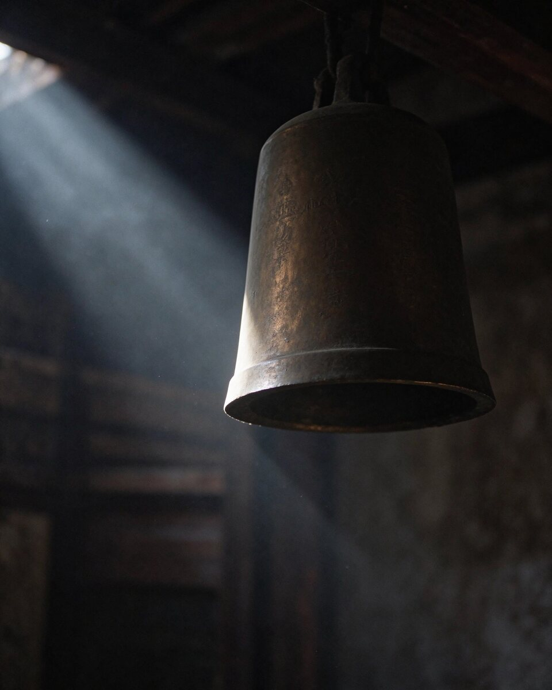
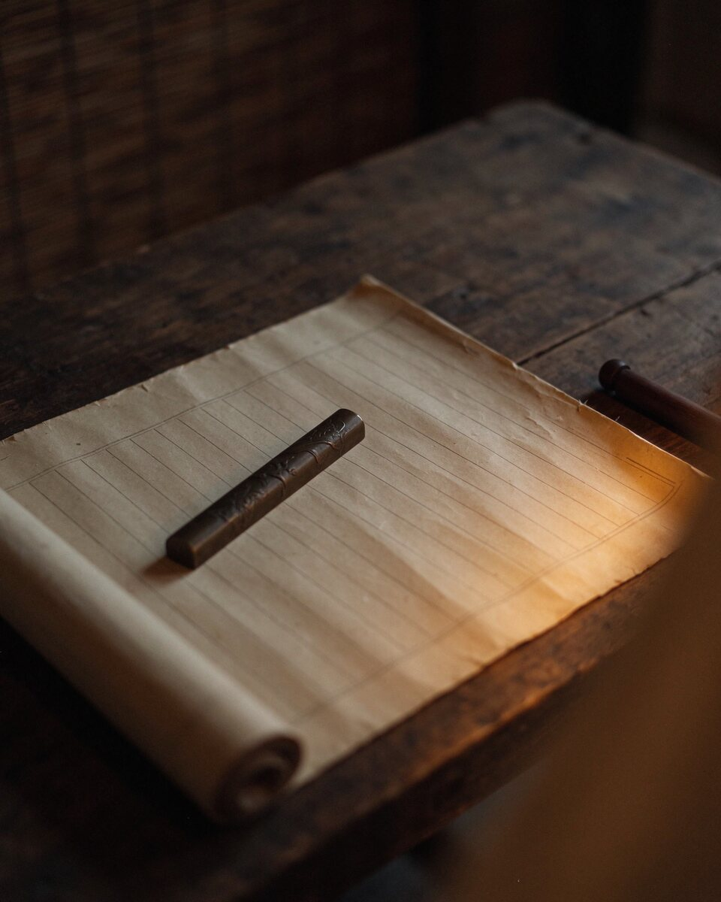
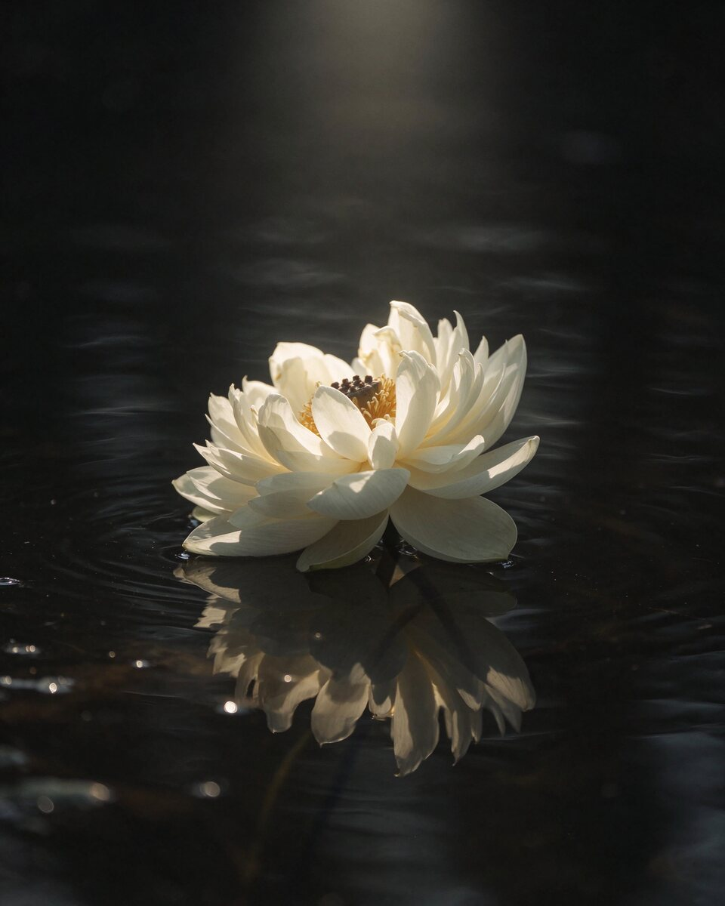

图录 The Gallery
六帧，都是殿里的东西。
此页收六幅图像：香篆、灯明、梵钟、经卷、莲华、菩提叶。它们在汉传日常里各有位置——香是供养之始，灯表智慧，钟声报时与警策，经卷传法，莲华喻离染，菩提叶记一念成觉。往下每一帧只写两段：它在殿里做什么，它被借来比喻什么。
这些不是文物照片，也不是造像图样的依据：全数为 AI 生成的示意图像，按本站的深墨与暖金配色统一调性，只求气息相合，不求形制精确。造像、手印、法器的准确尺度与样式，请依《造像量度经》一类的专门文献与实物，不以本页为准。图像不带人物、不带文字、不带印章，也不含任何灵验暗示。六帧都是静物照，画面自身极缓推近、光气微动；不附视频，也不做拟真的烟焰动画。
香粉压成回旋的篆字，一炷燃尽恰好一段时辰。古人以香计时，寺院以香为供养之始；一缕烟直上而散，是「燃香不择贵贱，唯心所感」那句老话的样子。
灯表智慧，破无明之暗。殿里的长明灯日夜不熄，供的不是灯火本身，是愿：愿自己与众生都能照见。点一盏灯不必许交易式的愿，也不必求即刻的验。

钟声晨昏各一，报时、集众、警策懈怠。叩钟三下，余音自己散尽，不追不续——本站「叩钟」一事的由来，就在这一下之后的空白里。

法赖文字而传。写经的规矩不在辞藻，而在行线、留白与一笔不苟：抄错一字，宁可重写一行。本站二十九部经页的底本与标点，都尽量让这卷纸回到原来的样子。

莲出淤泥而不染，故佛座称莲台，取其离染与开敷二义。汉传造像的莲台多为仰莲、俯莲与束腰三层，此帧只取水面写意，不作形制参照。
菩提树下，一念成觉。叶脉如网，喻法门重重无尽；汉传常以菩提叶作书签、装池，让一片叶子替人记住读到哪一行。
关于这些图像
六帧均由 AI 生成，经本站调色统一，用于呈现「殿里的东西」的气息；不构成文物摄影、不构成造像图样的依据，也不代表任何寺院或藏品。若需实物图像与尺寸数据，请查博物馆、石窟调查报告或《造像量度经》等专门文献。
六帧以极缓推近与光气微动代替视频：图像本身仍是静物照，页面不额外加载任何视频文件；系统开启「减少动态效果」时会自动静止。图像不含人物与文字，不设水印与二维码；可随经文页面一同打印，打印稿仅供个人课诵时对照。
存一份 · TAKE ONE COPY六帧合成一张竖版长图，1080 × 2561，约 240 KB，带题名与小注。手机长按保存，电脑右键另存；可供个人课诵、分享经文时配图。
下载长图 · 1080×2561